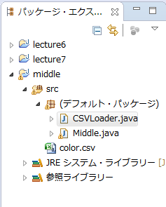
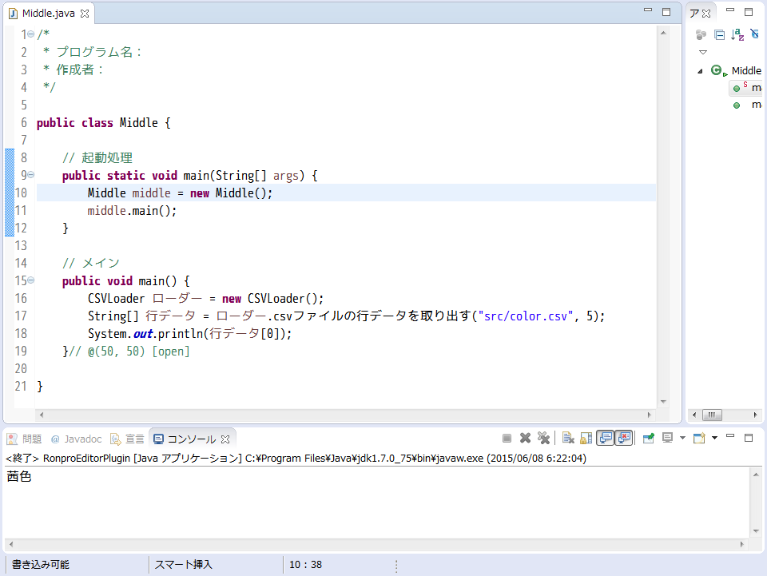

csvファイルからデータを取り出す
準備
講義ページから、CSVLoader.javaをダウンロードし、中間課題のプロジェクトの中に入れてください。

中間課題用のjavaファイルを作成し、作成したファイルを開いた状態でブロックエディタを起動してください。
データを取り出す
CSVLoader型の変数を定義する
ブロックエディタの右側にある、Project-Objectsというファクトリをクリックし、「CSVLoader型のローカル変数を作り、...」というブロックを取り出してください。
ローカル変数定義ブロックを取り出してください。ローカル変数定義ブロックを右クリックすると、CSVLoaderというカテゴリが出てきます。これをマウスオーバーすると、利用可能なメソッドが表示されます。
csvファイルから行データを取り出す
CSVLoader型の変数定義ブロックを右クリックし、「csvファイルから行データを取り出す」をクリックします。
作成したブロックの一番外側の黒いブロックを外します。
「csvファイルから行データを取り出す」というブロックのpathというところに、読み込むcsvファイルのパスを、lineNumというところに読み込みたい行の番号のブロックを結合してください。
String[]型のローカル変数定義ブロックに、先ほどのブロックを結合します。
取り出したcsvファイルのデータを実際にコンソールに表示します。以下の例では、csvファイルから取り出した列の0番目の要素を表示します。
BlockからJavaに変換し、プログラムを実行します。csvファイルの指定した行データがコンソールに表示されることが確認できればデータの取り出しに成功しています。

コンソールに表示されない場合は、csvファイルへのパスが間違っていないか確認してください。
csvファイルから列データを取り出す
CSVLoader型の変数定義ブロックを右クリックし、「csvファイルから列データを取り出す」をクリックします。
作成したブロックの一番外側の黒いブロックを外して「csvファイルから列データを取り出す」というブロックのpathというところに、読み込むcsvファイルのパスを、lineNumというところに読み込みたい行の番号のブロックを結合してください。
処理の確認用に、読み込んだ値をコンソールに出力します。コンソールに出力するブロックに結合し、Javaに変換します。
プログラムを実行します。csvファイルの指定した列データがコンソールに表示されることが確認できればデータの取り出しに成功しています。
コンソールに表示されない場合は、csvファイルへのパスが間違っていないか確認してください。